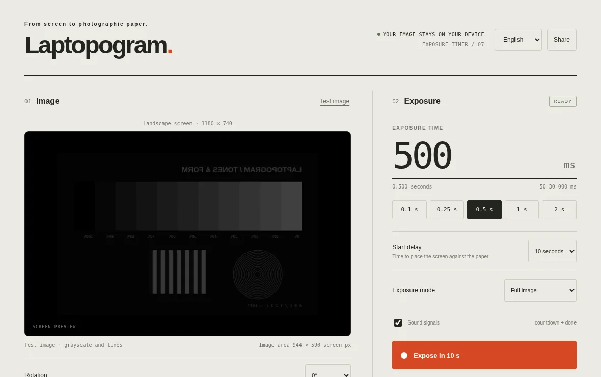

Laptopogram
Can a screen expose photographic paper?
Android 0.15 was tested with a Bluetooth remote on Pixel 10 (21 November 2026). Other Android devices have not been verified. Offline HTMLAndroid source code

From screen to photographic paper. Laptopogram uses a phone or computer display as a timed light source for black-and-white photographic paper. Selected images are processed locally: invert, mirror, rotate, adjust brightness or make four-part test strips. The Android app runs offline and handles remote shutter commands through supported hardware keys. Version 0.15 adds a quarter-turn rotation control, simplified exposure-time arrows and clearly separated self-timer and remote modes.
- Versions
- Web 07 · Android 0.15
- Languages
- Svenska · English · 日本語
- Images
- Processed on your device
- Android
- 8.0 or later
Before exposing photographic paper, try test exposures without paper. Browsers may not receive volume-key events from some Bluetooth remotes; the Android app captures supported keys directly. A black LCD image does not switch off its backlight.